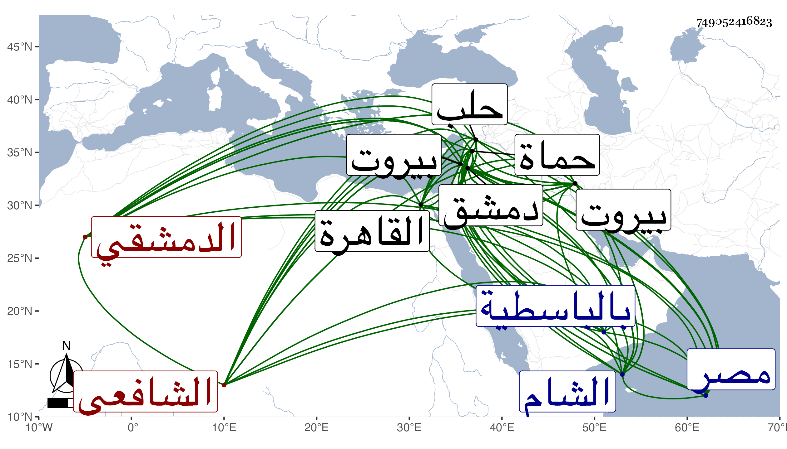

0902Sakhawi.DawLamic.ITO20230111-ara1.EIS1600.749052416823
Biography ID: 749052416823
1068
محمد بن أحمد بن عبد الله وقال شيخنا في أنبائه محمد بن علي بن موسى والأول أصح الشمس الدمشقي الشافعي والد إبراهيم الماضي ويعرف بابن قديدار . ولد سنة اثنتين وخمسين وسبعمائة تقريبا فإنه قال : كنت في فتنة بيبغاروس رضيعا ، وقرأ القرآن في صغره والعمدة والمنهاج وألفية النحو وعرض على جماعة وتلا بالسبع على ابن اللبان وغيره وصحب أبا بكر الموصلي وقطب الدين وغيرهما وتفقه لكن غلب عليه التصوف وأقبل على العبادة فاشتهر بالصلاح من بعد سنة تسعين حتى إن تمر لما قرب من دمشق أرسل إليه هو وجماعته بالأمر من حماة فلم يصبهم مكروه وكذا كان يكاتب الفرنج في مصالح المسلمين فلا يخالفونه غالبا ، وكانت له عند المؤيد وهو نائب الشام منزلة كبيرة بحيث بعث به مع الشهاب به حجي في الرسالة إلى الناصر وبنى له بدمشق زاوية وسكنها حتى مات وصارت كلمته نافذة وله أتباع ومريدون ومحبة في قلوب العامة والخاصة وهو مع هذا لين الجانب حسن الخلق كثير العبادة جيد البزة شجي الصوت وقد قدم مصر في سنة ثمان وثمانمائة رسولا من شيخ إلى الناصر . قال شيخنا فسمعنا من فوائده و أدائه قال شيخنا في معجمه : وكانت بيننا مودة مات بدمشق بعد ضعف بدنه وثقله في ليلة عيد شوال سنة ست وثلاثين ، ودفن يوم العيد وكانت جنازته مشهودة تقدم العلاء البخاري الناس ودفن على والده بخشخاشة بمقبرة باب الصغير إلى جانب قبة معاوية وصلي عليه بحلب وغيرها صلاة الغائب . وقال بعضهم إنه كان يكثر التردد لساحل بيروت للرباط وبنى له زاوية هناك وعمل بها عدة للسلاح كثيرة ولم يكن يبقى على شيء بل مهما حصل له أنفقه على مريديه وأتباعه . وقدم القاهرة أيضا في سنة ثلاث وعشرين لتعزية المؤيد في ولده إبراهيم ، ونزل في قاعة الخطابة بالباسطية وأما في المرة الأولى فنزل هو ورفيقه الشهاب بن حجي بمدرسة البلقيني ثم بمدرسة المحلي على شاطئ النيل وحصل له في آخر عمره ضعف في بدنه وثقل في سمعه والثناء عليه كثير ، وكان دينا خيرا محبا في العلم وأهله كثير التواضع والمرابطة ببيروت وبنى بها زاوية ووقف بها عددا للحرب ونعم الرجل وهو ممن في عقود المقريزي رحمه الله وإيانا .
